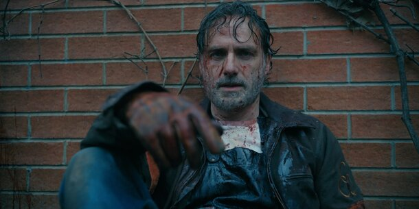
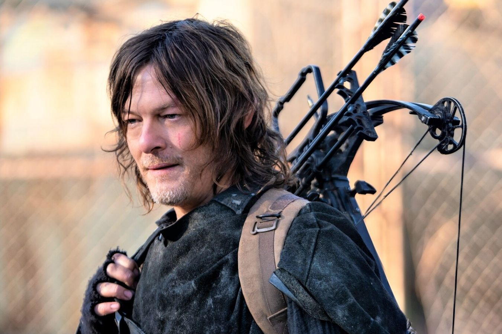
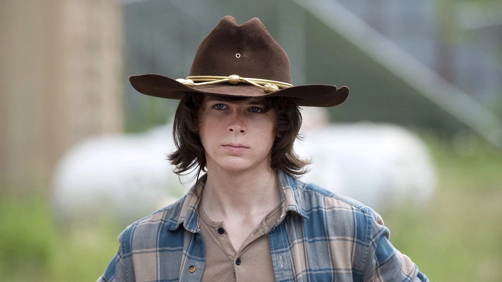
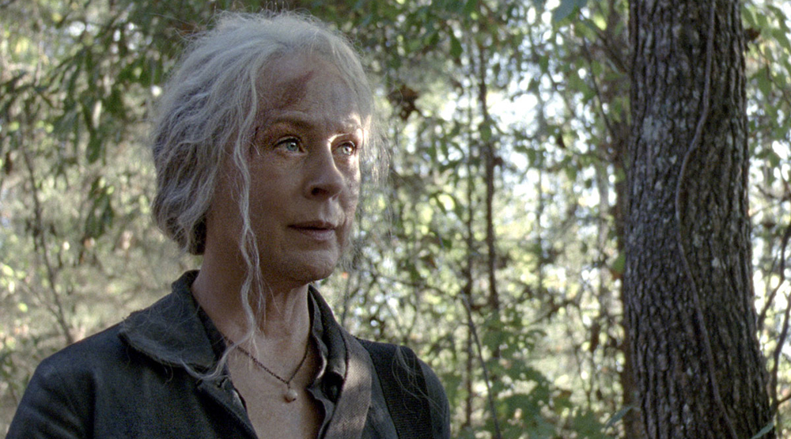

Ходячие Мертвецы - американский постапокалиптический телесериал, разработанный Фрэнком Дарабонтом и основанный на одноимённой серии комиксов, созданной Робертом Киркманом, Тони Муром и Чарли Адлардом (англ.)рус.. В центре сюжета небольшая группа людей, пытающихся выжить во время зомби-апокалипсиса.
Премьера состоялась 31 октября 2010 года на кабельном телевизионном канале AMC. Первый сезон содержит 6 эпизодов; второй сезон — 13 эпизодов; третий, четвёртый, пятый, шестой, седьмой, восьмой и девятый сезоны — по 16 эпизодов; десятый сезон — 22 эпизода; одиннадцатый сезон — 24 эпизода. Первый сезон был хорошо встречен критиками и был номинирован на несколько наград, в том числе и на премию «Золотой глобус» в категории «Лучший драматический телесериал». 25 октября 2011 года AMC продлил сериал на третий сезон, выход которого состоялся 14 октября 2012 года. В декабре 2012 года канал продлил шоу на четвёртый сезон, который стартовал 13 октября 2013 года и так же, как третий сезон, состоял из 16 эпизодов. 29 октября 2013 года AMC продлил шоу на пятый сезон. 7 октября 2014 года, до старта пятого сезона, AMC продлил сериал на шестой сезон. 17 октября 2016 года сериал был продлён на восьмой сезон. 13 января 2018 года сериал был продлён на девятый сезон. 5 февраля 2019 года телеканал AMC официально анонсировал десятый сезон сериала, который вышел в октябре 2019 года. 5 октября 2019 года сериал продлили на одиннадцатый, финальный, сезон, который будет состоять из 24 эпизодов.
16 сентября 2013 года AMC объявил о разработке спин-оффа сериала, который стартовал в августе 2015 года. Ким Диккенс и Клифф Кёртис были приглашены на центральные роли. Режиссёром пилотного эпизода стал Адам Дэвидсон, а сценарий написал автор оригинального комикса Роберт Киркман.
Персонажи:

Рик Граймс

Дэрил Диксон

Карл Граймс

Кэрол Пелетье